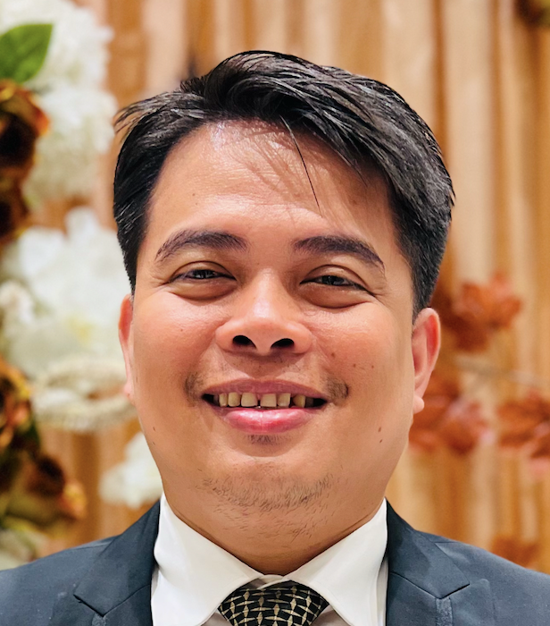

Vincent Calimlim

Summary
I am a motivated and passionate web developer with background in chemical engineering
Education
- Master of Science in Chemical Engineering - University of the Philippines Diliman (2012-2024)
- Bachelor of Science in Chemical Engineering - University of the Philippines Diliman (1999-2004)
Work Experience
- Instructor - Bicol University
November 2007 to present
- Handles college computer and major subjects
- Involve in extension and research activies
- Assist on accreditation effors in the college
- Bishop - The Church of Jesus Christ of Latter-Day Saints
February 2008 to November 2012
- Presided over a branch of over 400 members
- In-charge of members temporal and spritual well-being
- Full-time Missionary - The Church of Jesus Christ of Latter-Day Saints
December 2005 to January 2007
- Invite people to come unto Christ
- Served as mission recorder in charge of records, overseeing the whole mission (Samar and Leyte provinces)
- Served as mission secretary and assist the mission president in coordinating to local leaders
- Summer Intern - Coca-Cola Bottlers Inc Calasiao Plant
April to May 2003
- Handles quality control in the QA laboratory
- Performs water and wastewater analysis
- Student Assistant - Chemical Engineering Laboratory UP Diliman
August to October 2003
- In charge of manning the chemical engineering computer laboratory
- Assist chemical engineering students in their computer needs
Skills
- Programming Skills
- Office Skills
- Teaching Skills
Awards and Certifications
Awards
- DOST ERDT (Engineering Research and Development for Technology) Scholar (2012-2014)
Awards and Certifications
- Web Application for Everybody Specialization, Coursera/University of Michigan
- Introduction to Programming with Matlab, Coursera/University of Vanderbilt
- Python for Everybody, py4e.com
- Complete Fullstack Web Development 2024, Udemy
- Outcome-based Education for Engineering, BSU
Other